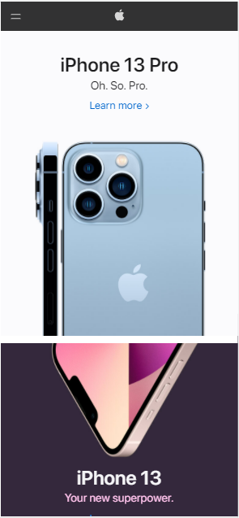

White Space and Clean Design
Apple
apple.com This design is very minimalistic. The designers only use the necessary amount of space to convey their content and let the white space drive their page. There is plenty of padding around the headings which are just large enough to catch the eye. Most of the space though is given to a photo of their product. This photo draws the eye first followed by the headings. This clever use of white space along with a minimalistic design creates a clean and simple looking web page that tells all of its information visually. Just by looking at the page, you know that it has something to do with phones without having to read a lot of content.
Visual Hierarchy
Forbes
forbes.comThe first thing that grabs your attention is a photo displaying a hint of what the content might be about. Right underneath this photo, you get an appropraite heading that uses a good eyecatching font size and weight. Then you get a breif description of what the content will be about. All of this is aligned and in a size that drives the content downwards. You see what is most important first, and then your eye travels down to more content.
PARC: Contrast
GitHub
github.comThe colors used in this site make a nice contrast with each other. The white font works well with the dark background. The white and green log in buttons also have a nice contrast and serve to draw your eye to the most important part of the page. The little design at the bottom is surrounded by a blue picture of a globe that also creates a nice contrast with the dark background.